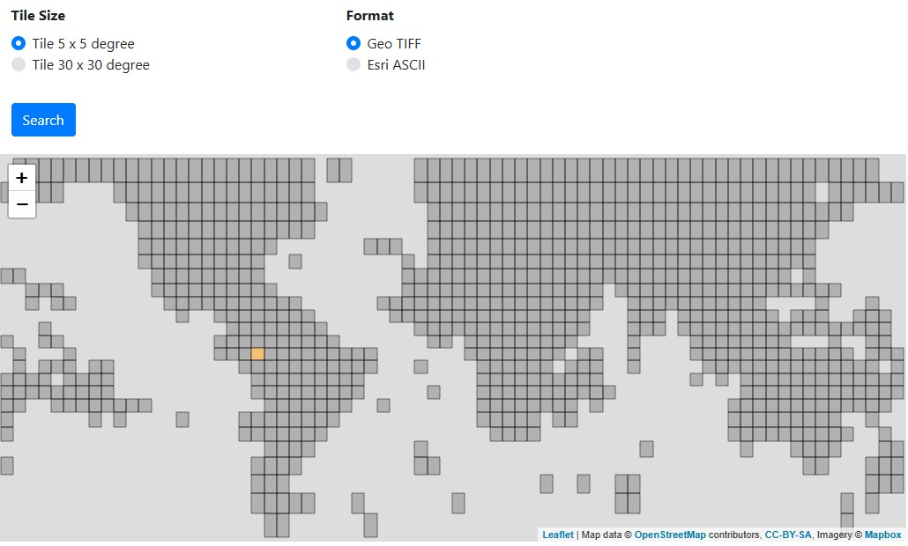

Watershed delineation
So far, we have already shortly talked about the data and software that we think we will need to be able to model river flow within the Paute river basin (see the Introduction). We will now use (part of) this data and software to spatially delineate the watershed. This will help to define up to which geographical point we have to consider the prevailing rainfall and later on exclude meteorological stations that are located outside our watershed. Also, the delineation will give us an insight into the different subbasins and how they contribute to the final flow of the Paute river. As such, this delineation is a useful step towards the development of a hydrological model.
Watershed delineation is, in the first place, based on the elevation of the landscape. Starting from a specific point of interest (e.g., a lake, a specific river, or the outflow of a basin), the complete upstream region can be defined by considering (changes in elevation). On top of this spatial extent, also the local characteristics of land usage and prevailing soils define how precipitation will behave. In a vegetated area, precipitation can be intercepted and evaporated into the atmosphere without even touching the ground. Meanwhile, precipitation that reaches the ground can be taken up by the vegetation or infiltrate the soil up to a certain maximum amount. What remains will typically flow on or within the topsoil and run off to the nearest stream/river/lake/reservoir/...
This means that calculations of the water balance are very location-specific and require a lot of computational power. However, grouping regions with seemingly similar vegetation and soil characteristics into hydrological units can reduce these calculations and increase simplicity. This is exactly the idea behind the approach of SWAT+. Through its available plugin for QGIS, this delineation can be performed in a structured and uniform manner that supports reproducability. These different steps are mentioned here, starting with the preparation of the Digital Elevation Model and the associated river network and lake delineation. Then, the land use and soil characteristics are added prior to defining the hydrological response units. Following this delineation, the meteorological data is prepared to represent the climate within the basin, as well as to act as time series at specific locations. This information will be added later.
DEM preparation

Subsequently, the downloaded DEM is clipped in QGIS (xmin = -79.43, xmax = -78.24, ymin = -3.36, ymax = -2.27) to exclude all irrelevant information and speed up the calculations required for delineating the river network, the reservoirs, and the complete watershed (see further). The no-data value is set at -32768 and the clipped DEM is reprojected to an “equal-area” projection, i.e. Universal Transverse Mercator (UTM) or EPSG 32717 (which is also known as UTM 17S). This reprojected DEM is then saved and used as a baseline throughout the HydroCORE project.
River network delineation
Aside from information on the elevation gradients throughout the watershed, SWAT+ also needs to know where water bodies within the watershed are located to define the different subbasins and hydrological response units. Even though shapefiles of the streams and rivers within the Paute river basin may already exist, we opt to use the abovementioned clipped and reprojected DEM derive the whole river network within the watershed. This is done by following the instructions explained in this video (though no analysis of Strahler order is included). The delineation strongly depends on the chosen endpoint, for which the confluence with the Upano river is chosen. Note that this calculation will be done on the clipped DEM, which means that also streams and rivers outside the watershed will be identified. The obtained shapefile of the river network will have the same geographical extent as the DEM used to derive it. But no worries, this does not affect the creation of the hydrological response units, as these will be purely based on the chosen flow endpoint (i.e., the confluence with the Upano river).
In short, the following steps were taken by making use of the SAGA plugin in QGIS:
- Filling of DEM (Processing Toolbox > 'fill (wang & liu)')
- Creation of river network (Processing Toolbox > 'Channel network and drainage basin')
- Saving the river network as a temporary file and excluding the ID-column
- Identification of outflow location (New shapefile > Points)
- Derivation of river basin (Processing Toolbox > 'upslope area')
- Conversion of upslope raster to shapefile
- Clip DEM with the derived shapefile of the basin
- Clip River network with the derived shapefile of the basin
Reservoir delineation
In contrast to the river network, reservoirs cannot be delineated based on the DEM. Instead, two main pathways can be identified: (1) manual delineation based on a satellite map, or (2) automatic identification based on satellite maps.
Manual delineation is relatively straightforward. One of the options to do so, entails loading a Google Satellite basemap in QGIS (as explained here) and the subsequent creation of a new layer in which the reservoir polygons will be drawn. What remains is the tedious work of drawing the polygons based on the satellite image. When applying this approach, it is important to verify if the satellite image actually covers the whole reservoir. It is possible that the image is collected during the dry season and that the water level of the reservoir is lower than normal, which can impact the manual delineation and underestimate the overall capacity of the reservoir during modelling.
Automatic delineation is less straightforward as it makes use of Sentinel-2 data from the European Copernicus project. The approach entails the combination of various bands into a new signal that distinguishes land from water. A practical approach to derive the necessary reservoir shapefiles is provided here, with the sidenote that (1) the online Copernicus Data System looks a bit different and (2) the final goal was to extract the water bodies (not the land). This also causes the identification of some clouds as water bodies, though a specific extraction ('save selected features') in a new shapefile is possible. Within this new shapefile, we notice that the delineation of the Amaluza reservoir is challenged by a low resolution and quality, and the partially coverage of the water surface by water hyacinth. This limits the classification as water and causes the Amaluza reservoir to be fractioned. To counter this issue, we can create additional polygons to ultimately obtain a single feature (through the procedure 'dissolve'). Prior to saving this shapefile with both reservoirs, a visual check is highly recommended to determine the overlap and manually improve the boundaries if deemed necessary.
Land use characterization
We now have the very basic spatial elements (DEM, rivers, and reservoirs) to derive the watershed and subbasing, but more information on the activities within the basin is needed to move on towards the definition of hydrological response units. More specifically, information on the land use is needed to determine hydrological properties (like interception, evaporation, transpiration). For this, land use maps with a horizontal resolution of about 400 m are available on the SWAT+ webpage (click here). These land use maps are based on the unsupervised classification of 1-km AVHRR (Advanced Very High Resolution Radiometer) 10-day NDVI (Normalized Difference Vegetation Index ) composites, collected between April 1992 and March 1993. More information on these maps can be found here.
As the spatial extent of these maps is too wide for our study area, we start by clipping the raster in QGIS according to the same extents mentioned earlier and reprojecting it to a different coordinate reference system (from CRS WGS84 to UTM 17S; EPSG 4326 to 32717). Within this raster, each pixel is assigned a specific numerical code that links to a unique land use category. The example database within the SWAT+ documentation reports at least 24 different categories, but only a subset of these land uses are encountered within our study area. These codes can be found in the table below (including SWAT-code and explanation, based on the databases plants.plt and urban.urb), to indicate the different types of land uses observed within the spatial extent of the clipped land use raster. It is also this clipped version of the land use raster that will be used for modelling purposes in QSWAT+ (the shapefile-clipped versions are too rough around the watershed edges).
| Landuse ID | SWAT-code | Explanation |
|---|---|---|
| 1 | URMD | Residential - Medium density |
| 2 | CRDY | Dryland cropland and pasture |
| 5 | CRGR | Cropland/Grassland mosaic |
| 6 | CRWO | Cropland/Woodland mosaic |
| 7 | GRAS | Grassland |
| 8 | SHRB | Shrubland |
| 10 | SAVA | Savanna |
| 13 | FOEB | Evergreen broadleef forest |
| 21 | TUWO | Wooded tundra |
| 22 | TUMI | Mixed tundra |
Soil characterization
In addition to the land use raster, more information is needed from the soils within the basin to determine local and regional hydrological properties (like water content, permeability, ...). For this, soil maps with a horizontal resolution of about 7500 m are available on the SWAT+ webpage (click here). Similar to the land use maps, we start by clipping the raster in QGIS according to the same extents mentioned earlier and reprojecting it to a different coordinate reference system (from CRS WGS84 to UTM 17S; EPSG 4326 to 32717). Within this raster, each pixel is assigned a specific numerical code that links to a unique soil category. These codes can be found in the table below to indicate the different types of soils observed within the spatial extent of the clipped soil raster. It is also this clipped version of the soil raster that will be used for modelling purposes in QSWAT+ (the shapefile-clipped versions are too rough around the watershed edges).
Watershed delineation
The previous steps allow to collect all the necessary input to start developing our hydrological model of the Paute river in (Q)SWAT+. To do so, we rely on the introduction to SWAT+ as provided by the YouTube channel Open Water Network. More specifically, the following specific steps are taken within the QSWAT+ software:
- Loading of the clipped DEM and Paute river network
- Addition of reservoirs as lakes (Selecting the check box ignores the info boxes that pop up due to delineation inaccuracies originating from channels crossing the reservoir boundaries)
- Addition of clipped land use and soil characteristics , along with the associated info tables ('global_landuses', 'global_soils', 'global_usersoil'). For plants and urban regions, tables with the same name are selected
- An extra slope band (at 10%) is added and merging of small channels is allowed when they cover max. 10% of the subbasin
- No additional changes are made in the HRU tab
By implementing all these steps, the Paute river basin can be delineated and hydrological response units can be derived from the prevailing land use and soils throughout the watershed. Normally, no further adaptations are necessary (unless, of course, new information on DEM, land use, or soils is obtained) and this delineated watershed can be used for all subsequent modelling scenarios. This means that the next step is the data preparation to correctly represent the climate throughout the basin and act as meteorological time series at very specific locations. More information on this can be found on the page related to Data preparation.